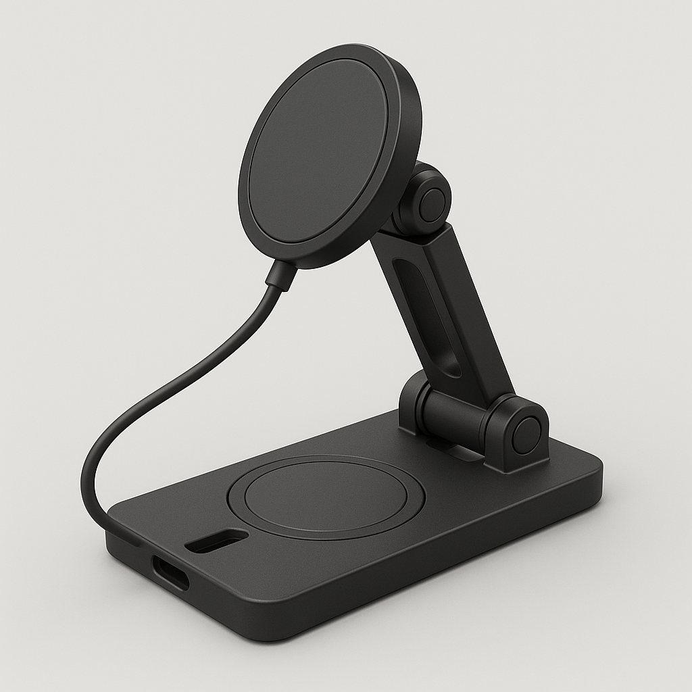
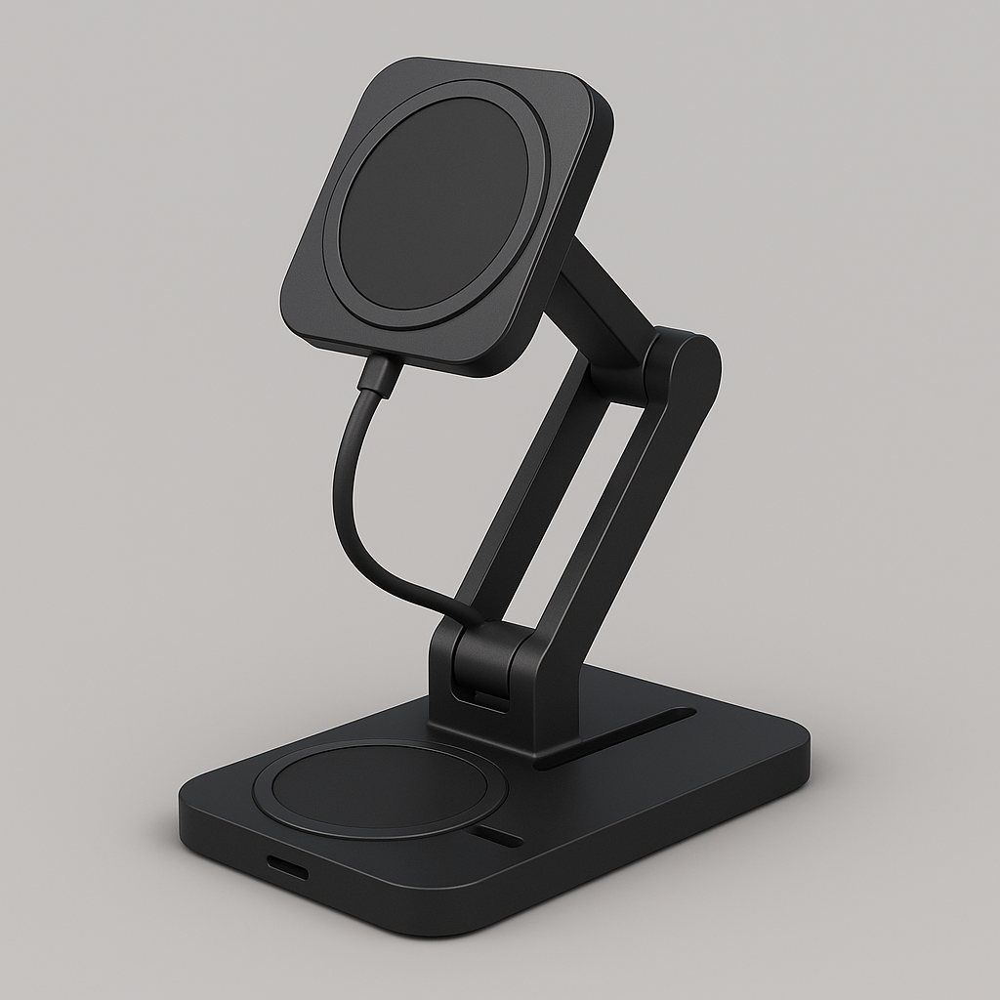
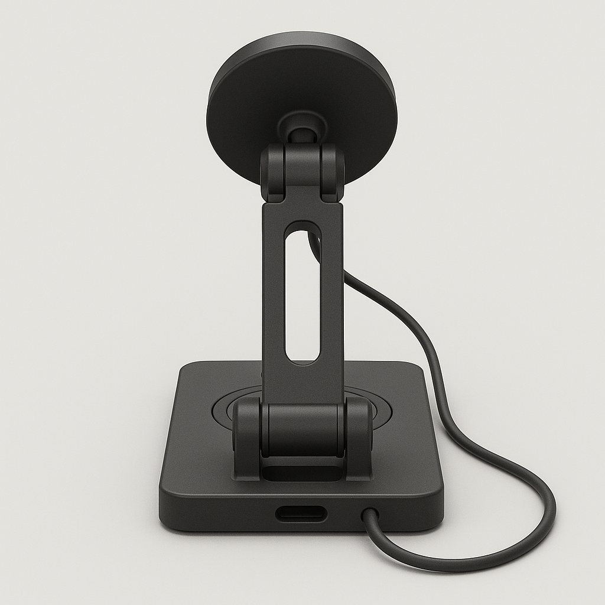

Un objet conçu de A à Z : croquis, rendus, modélisation 3D de 7 pièces et fichiers STL à imprimer.
J'avais deux supports MagSafe qui traînaient, chacun de son côté. Plutôt que de les laisser inutilisés, j'ai décidé de les réunir dans un seul objet capable de recharger deux appareils en même temps.
Le principe : un socle plat qui porte un premier chargeur, et un bras articulé qui soutient le second à hauteur d'yeux, orientable. Tout est modélisé de zéro et conçu pour s'imprimer en 3D.
Ces trois images ont été générées par IA à partir de mes croquis et de mes cotes. Ce sont des rendus de projet, pas des photos de l'objet final.



Voici les vrais fichiers STL. Choisis une pièce pour la voir seule, ou « Toutes » pour les voir côte à côte. Fais glisser pour tourner, molette ou pincement pour zoomer.
| N° | Pièce | Dimensions (mm) | Fichier |
|---|---|---|---|
| 1 | Base | 75 × 100 × 11 | STL |
| 2 | Support de charnière | 40 × 15 × 26 | STL |
| 2 | Douille | 1 × 13 × 13 | STL |
| 3.1 | Axe 1 | 40 × 8 × 8 | STL |
| 3.2 | Axe 2 | 29 × 8 × 8 | STL |
| 4 | Bras | 22 × 106 × 13 | STL |
| 5 | Support haut | 66,5 × 66,5 × 26 | STL |
La numérotation suit l'ordre de conception : socle, articulation (support de charnière, douille, axes), bras, puis support du chargeur du haut.